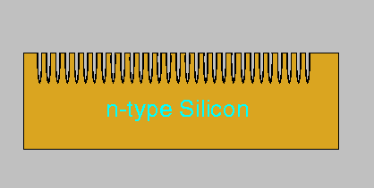
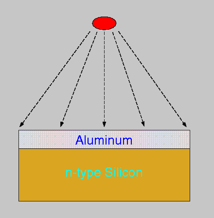
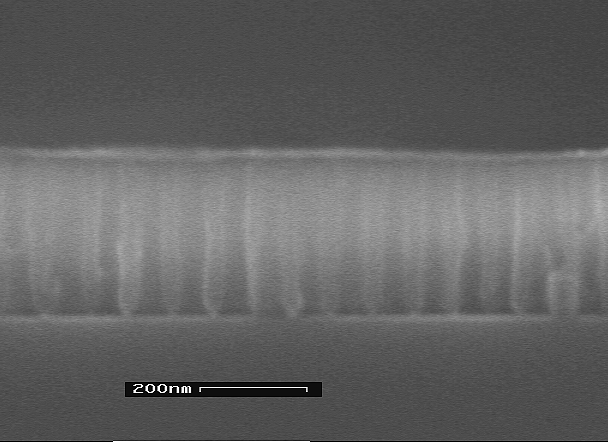
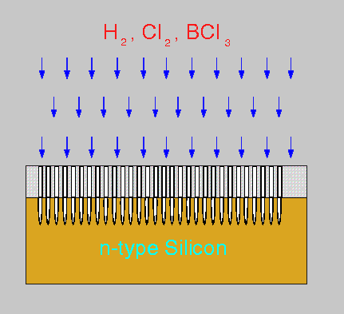
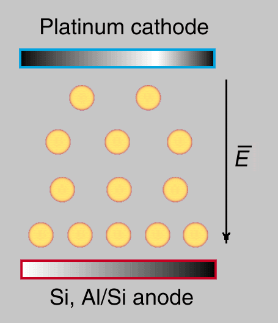
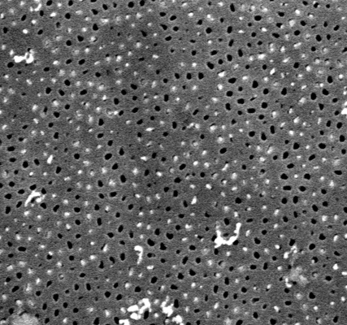

The
objective of this work is to outline a new coating technique suitable for
surface modification and creation of high ordered array of colloidal particles
on a semiconductor surface. Usage of these structures to create biosensor
and non-linear optic devices require developing new inexpensive, large
area fabrication technique.

We use electrophoretic
deposition (EDP) to produce gold nano-scale structures on a prior patterned
silicone surface from colloidal suspension. Two kinds of gold colloids
have been used: 1) gold particle suspension deaggregated and stabilized
by citric acid and 2) suspension of gold particles covered with a silica
shell. Today, nano-particles of gold, as well as a number of chemically
modified gold colloids (for example gold particles covered with a silica
shell), are commercially available with typical particle sizes in the range
2-50 nm.
EDP from these
colloids has been carried out using patterned semiconductor (n-type Si)
or semiconductor covered with a porous metal oxide (Al2O3)
film.

Anodizing
of
thin aluminum film evaporated on silicon surfaces produce a self ordered
hexagonal array of cylindrical pores with character size about 20-50 nm.
The pore formation process proceeds until it consumes all of the aluminum
and stops at the Al/Si interface.
The initial pore
diameter as received is 15-20 nm. The pore diameter can be increased relative
to the pore spacing by an additional phosphoric acid widening etch.
|
Crossection of anodized Al film on Si |
 Crossection of anodized Al film on Si after widening in phosphoric acid |

The self arranged
alumina pores array can be used as an etch mask, to produce highly ordered
structure on the Si surface. The hexagonal pattern has been transferred
to the Si using a three step reactive ion etch.

The deposition of
nano particles on the metal oxide is difficult due to agglomeration during
the deposition process. EDP on a porous alumina surface lead to uncontrolled
aggregation and development of spherical aggregates
of 5000-15000 particles.
The nuclei pure
gold particles stabilized by citric acid increase in size to form clusters,
which are then bridged and converted into dense arrays. These arrays plug
the pore mouth.
Gold particles
with silica shells were able to infiltrate the space within the pore. We
achieve a good particle packing, producing a structure which adhered to
the silicon with extensive heterocoagulation in the nanoscale range.
Our scanning electron
microscopy studies show that we produce aligned
gold particle arrays on the silicon surface.
{kind=link}